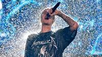

About Justin Bieber
Bieber nació el 1 de marzo de 1994 en London y creció en la ciudad de Stratford, ambas en Ontario. Fue criado por su madre soltera Pattie Mallette, quien quedó embarazada cuando tenía 18 años, y se ocupó en diversos trabajos de baja remuneración para mantener su hogar.
En 2008, el ejecutivo de la industria de la música Scooter Braun descubrió a Bieber cuando lo vio accidentalmente en algunos vídeos en YouTube y tiempo después se convirtió en su mánager. Braun reunió al cantante con Usher en Atlanta, donde firmó un contrato musical con el sello discográfico de Braun y Usher, Raymond Braun Media Group (RBMG),9 y uno de grabación con Island Records ofrecido por L.A. Reid.
El primer sencillo de Bieber, «One Time», fue lanzado en la radio en el momento en que se encontraba grabando su álbum debut. La canción alcanzó la decimosegunda posición en la lista de éxitos Canadian Hot 100 en su primera semana de lanzamiento en julio de 2009, y posteriormente alcanzó la decimoséptima ubicación en la lista de conteo Billboard Hot 100. El sencillo tuvo éxito en los mercados internacionales en otoño de ese año. El 7 de enero de 2010 «One Time» fue certificado platino por la RIAA en los Estados Unidos y el 27 de septiembre en Canadá,1330 y también fue certificado con disco de oro en Australia y Nueva Zelanda.
Su primer álbum My World salió al mercado el 17 de noviembre de 2009 y debutó en el número seis de la Billboard 200.
En enero de 2010 publicó «Baby», el primer sencillo de My World 2.0 —continuación de My World—, y donde canta junto a Ludacris. La canción se convirtió en su mayor éxito hasta el momento, ya que se ubicó en la quinta posición de la lista de sencillos más escuchados en los Estados Unidos y alcanzó las primeras diez posiciones en siete países.
El 12 de septiembre de 2010 fue galardonado en los MTV Video Music Awards como artista revelación e interpretó un popurrí de canciones que contenía los temas «U Smile», «Baby» y «Somebody to Love», además de que tocó brevemente la batería. Al mes siguiente anunció que publicaría un álbum acústico titulado My Worlds Acoustic, el cual finalmente salió a la venta el «viernes negro» en los Estados Unidos. El álbum contiene versiones acústicas de sus canciones de discos anteriores y una canción nueva titulada «Pray».
El 1 de noviembre de 2011 salió a la venta su segundo álbum de estudio titulado Under the Mistletoe. En la primera semana de lanzamiento el disco vendió alrededor de 210.000 copias y debutó en la posición número uno de la lista de éxitos estadounidense Billboard 200. En ese mismo año, la revista Forbes lo catalogó como la tercera celebridad más influyente del mundo, detrás de Lady Gaga y Oprah Winfrey.
El 28 de agosto de 2015, Bieber lanzó un nuevo single titulado "What Do You Mean?" Como el single principal de su cuarto álbum de estudio Purpose. La canción es una mezcla de Teen pop, música de baile electrónica y R&B acústico y se convirtió en el primer número uno de Bieber en la Billboard Hot 100. Él se convirtió en el artista masculino más joven a debutar en la cima de esta lista, obteniendo así un Guiness record. El 23 de octubre de 2015, Bieber lanzó el segundo single del álbum titulado "Sorry" como una descarga instantánea, con la pre-orden del álbum en iTunes. La canción debutó en el número dos en el Billboard Hot 100. Después de ocho semanas no consecutivas en el número dos, en la tabla de la semana el 23 de enero de 2016, "Sorry" subió al primer lugar de la lista y se convirtió en el segundo número uno de Bieber en el Billboard Hot 100
Purpose fue lanzado el 13 de noviembre de 2015 y debutó en el número uno en el Billboard 200, convirtiéndose en el sexto álbum de Bieber en debutar en la cima de la lista. Fue el cuarto álbum más vendido de 2015 con ventas mundiales de 3,1 millones de copias. A junio de 2016, había vendido 4.5 millones de copias a nivel mundial. El 11 de noviembre de 2015, Bieber anunció que se embarcará en el Purpose World Tour. La gira comenzó en Seattle, Washington, el 9 de marzo de 2016.
- 